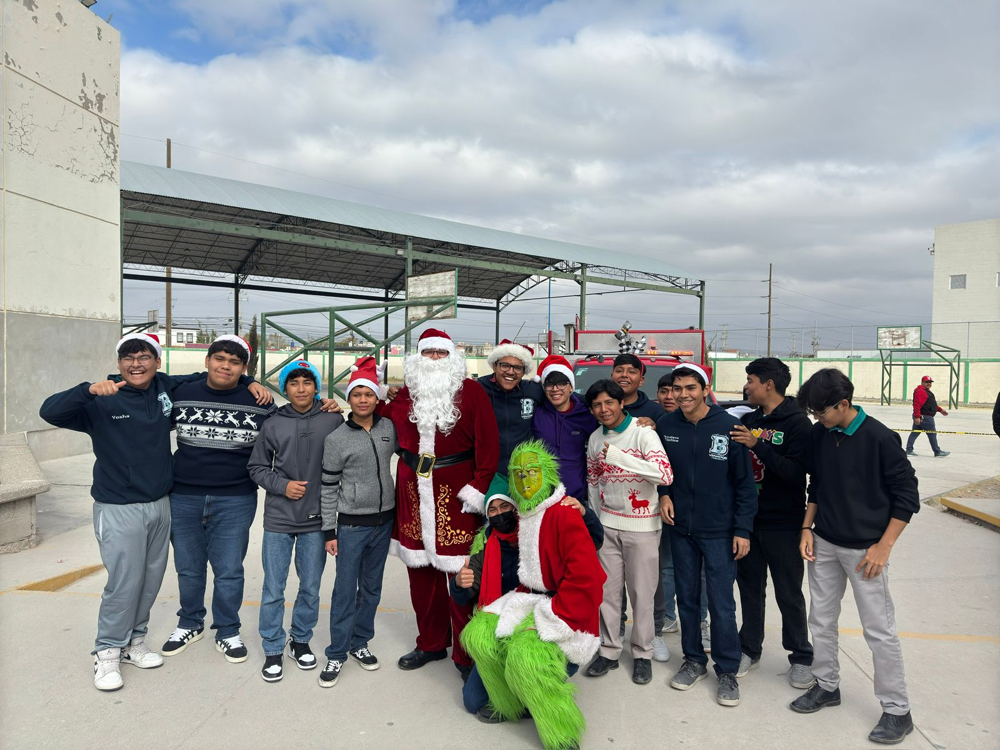
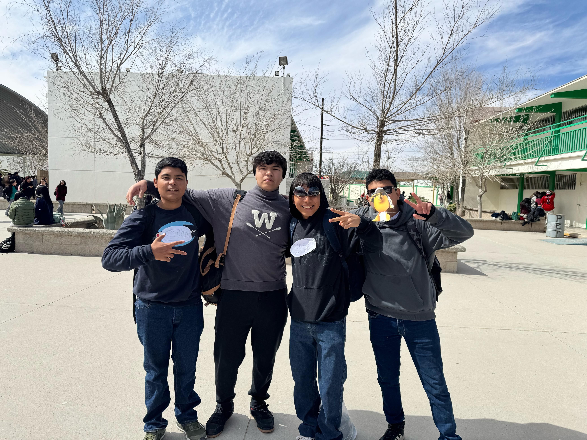
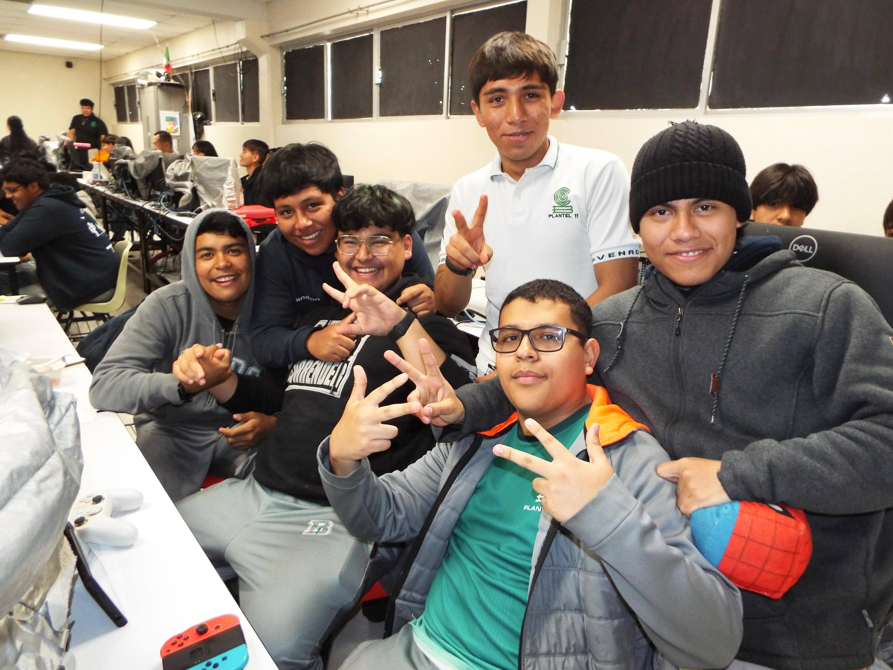
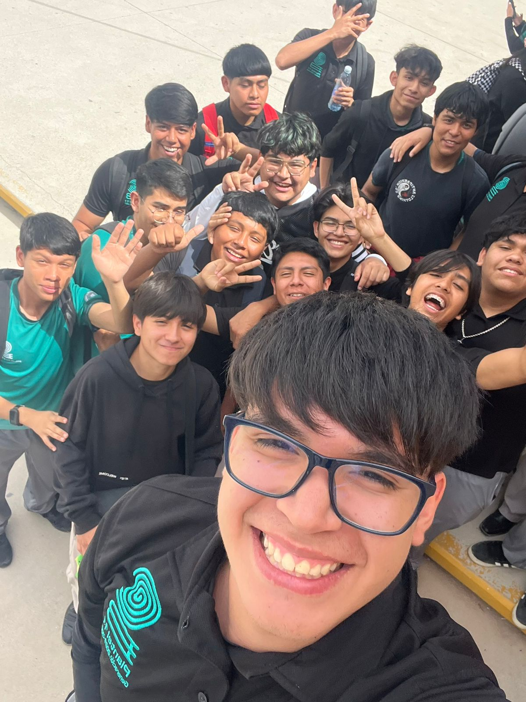

📌 Mis buenos recuerdos en TICs
Enero - junio 2026 | Prof. Carlos Iván Cardoza Cisneros
🌐 1. Cuando partimos la piñata

🖥️ 2. Mi primera exposicion jeje

🎨 3.Estabamos pasando un buen rato luego de terminar nuestras actividades, cumplio años mi bff arturito

🤝 4.Justo hoy cree un recuerdo nuevo platicar con todos mis amigos

Que aprendi?
Recuerdos
🌟 Hecho con amor jeje🌟